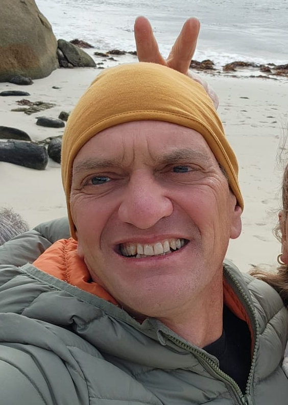

If you suspect a cruciate ligament injury in your dog, it is best to book in to see us. It is possible that the joint is too painful and the muscles too tense to assess the joint instability. In this case, sedation and xrays may be required.
Surgical repair as soon as possible is recommended for any dog with cruciate ligament injuries. Repair will ensure that further, lasting damage is minimised and the pain is relieved.
We offer two surgical procedures for repairing cruciate injuries. The choice generally depends on the weight of the dog, but there are a number of factors that the vet will discuss and guide you through.
DeAngelis (also known as lateral fabellotibial suture or extracapsular repair) - This is generally a good option for smaller dogs up to 10kg. Prosthetic suture (very strong thread) is used to secure the joint in the same way that the ligament would do if not damaged. In larger dogs, the greater forces exerted on the joint when they move can cause the prosthetic thread to break, but smaller dogs have good results with this surgery.
Cost: $1700. This includes the surgery, pain medication, 3 post-op check-ups, and comprehensive aftercare guidance.
TPLO (Tibial Plateau Levelling Osteotomy) - This is the gold standard surgery for cruciate ligament repair and involves sawing and repositioning of part of the shin bone, which is then secured with a metal plate to stabilise the joint. Watch this (Warning! Graphic!) video to see what is involved in the TPLO procedure.
Cost: $4200. This includes the surgery, pain medication, 3 post-op check-ups, post-op xrays, and comprehensive aftercare guidance.